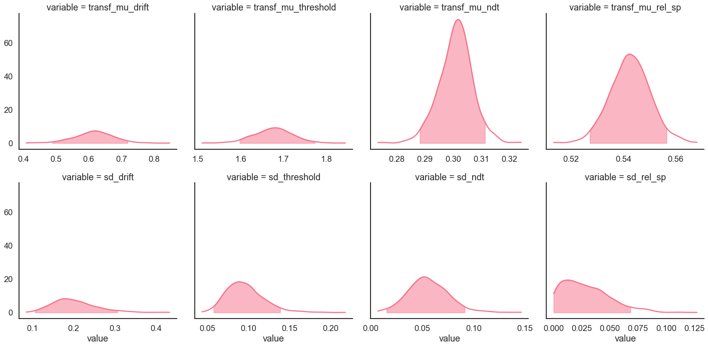

[1]:
import rlssm
import pandas as pd
Simulate some data:¶
[2]:
from rlssm.random import simulate_hierDDM
[3]:
data = simulate_hierDDM(n_trials=200,
n_participants=15,
gen_mu_drift=.6, gen_sd_drift=.3,
gen_mu_threshold=.5, gen_sd_threshold=.1,
gen_mu_ndt=-1.2, gen_sd_ndt=.05,
gen_mu_rel_sp=.1, gen_sd_rel_sp=.05)
INFO:numexpr.utils:NumExpr defaulting to 8 threads.
[4]:
data.head()
[4]:
| participant | drift | threshold | ndt | rel_sp | rt | accuracy | |
|---|---|---|---|---|---|---|---|
| 0 | 1 | 1.118135 | 1.831037 | 0.282418 | 0.536375 | 1.187418 | 1.0 |
| 1 | 1 | 1.118135 | 1.831037 | 0.282418 | 0.536375 | 0.611418 | 1.0 |
| 2 | 1 | 1.118135 | 1.831037 | 0.282418 | 0.536375 | 1.210418 | 1.0 |
| 3 | 1 | 1.118135 | 1.831037 | 0.282418 | 0.536375 | 0.871418 | 0.0 |
| 4 | 1 | 1.118135 | 1.831037 | 0.282418 | 0.536375 | 0.523418 | 1.0 |
[5]:
[pd.unique(data[col]) for col in data.columns[:-2]]
[5]:
[array([ 1, 2, 3, 4, 5, 6, 7, 8, 9, 10, 11, 12, 13, 14, 15]),
array([1.11813458, 0.61507279, 0.27873029, 0.58491441, 0.65865569,
0.7780653 , 0.59851054, 0.74868412, 0.47395169, 0.56042587,
0.65745842, 0.41235654, 0.92741967, 0.50767428, 0.77209005]),
array([1.83103666, 1.78412451, 1.58859874, 1.56235746, 1.68504194,
1.54048471, 1.60760806, 1.85738632, 1.54679613, 1.78830684,
1.31753708, 1.55090857, 1.85205929, 1.78609924, 1.65029658]),
array([0.28241755, 0.28342902, 0.31028303, 0.28993987, 0.33325792,
0.32920996, 0.30596186, 0.28590442, 0.29795662, 0.30529265,
0.3012264 , 0.3134359 , 0.29304776, 0.29522881, 0.28692252]),
array([0.53637539, 0.56278571, 0.54909696, 0.55185371, 0.54733162,
0.539732 , 0.52180344, 0.51710173, 0.53696768, 0.54172473,
0.53630971, 0.52981145, 0.51022293, 0.54843534, 0.52830621])]
[6]:
data.groupby('participant').describe()[['rt', 'accuracy']]
[6]:
| rt | accuracy | |||||||||||||||
|---|---|---|---|---|---|---|---|---|---|---|---|---|---|---|---|---|
| count | mean | std | min | 25% | 50% | 75% | max | count | mean | std | min | 25% | 50% | 75% | max | |
| participant | ||||||||||||||||
| 1 | 200.0 | 0.942138 | 0.645042 | 0.351418 | 0.521418 | 0.747418 | 1.115418 | 5.528418 | 200.0 | 0.905 | 0.293951 | 0.0 | 1.0 | 1.0 | 1.0 | 1.0 |
| 2 | 200.0 | 0.974534 | 0.536600 | 0.343429 | 0.604929 | 0.799929 | 1.220179 | 3.585429 | 200.0 | 0.785 | 0.411853 | 0.0 | 1.0 | 1.0 | 1.0 | 1.0 |
| 3 | 200.0 | 0.985268 | 0.499462 | 0.397283 | 0.584533 | 0.853783 | 1.262783 | 3.114283 | 200.0 | 0.640 | 0.481205 | 0.0 | 0.0 | 1.0 | 1.0 | 1.0 |
| 4 | 200.0 | 0.869085 | 0.446803 | 0.335940 | 0.561940 | 0.735940 | 1.054940 | 3.088940 | 200.0 | 0.760 | 0.428155 | 0.0 | 1.0 | 1.0 | 1.0 | 1.0 |
| 5 | 200.0 | 0.948708 | 0.545327 | 0.403258 | 0.589758 | 0.796258 | 1.130508 | 4.379258 | 200.0 | 0.765 | 0.425063 | 0.0 | 1.0 | 1.0 | 1.0 | 1.0 |
| 6 | 200.0 | 0.871055 | 0.486609 | 0.374210 | 0.551710 | 0.724210 | 1.017710 | 3.221210 | 200.0 | 0.810 | 0.393285 | 0.0 | 1.0 | 1.0 | 1.0 | 1.0 |
| 7 | 200.0 | 0.897872 | 0.450482 | 0.381962 | 0.552962 | 0.768962 | 1.122462 | 2.638962 | 200.0 | 0.700 | 0.459408 | 0.0 | 0.0 | 1.0 | 1.0 | 1.0 |
| 8 | 200.0 | 1.081504 | 0.743623 | 0.388904 | 0.606404 | 0.848904 | 1.307404 | 5.482904 | 200.0 | 0.840 | 0.367526 | 0.0 | 1.0 | 1.0 | 1.0 | 1.0 |
| 9 | 200.0 | 0.822577 | 0.399378 | 0.355957 | 0.533957 | 0.712957 | 0.958207 | 2.443957 | 200.0 | 0.720 | 0.450126 | 0.0 | 0.0 | 1.0 | 1.0 | 1.0 |
| 10 | 200.0 | 0.996133 | 0.536923 | 0.386293 | 0.593043 | 0.831793 | 1.182543 | 3.255293 | 200.0 | 0.805 | 0.397195 | 0.0 | 1.0 | 1.0 | 1.0 | 1.0 |
| 11 | 200.0 | 0.694166 | 0.326427 | 0.329226 | 0.459726 | 0.600226 | 0.803726 | 2.732226 | 200.0 | 0.755 | 0.431166 | 0.0 | 1.0 | 1.0 | 1.0 | 1.0 |
| 12 | 200.0 | 0.911831 | 0.530493 | 0.395436 | 0.560186 | 0.740936 | 1.062936 | 3.348436 | 200.0 | 0.690 | 0.463654 | 0.0 | 0.0 | 1.0 | 1.0 | 1.0 |
| 13 | 200.0 | 0.994263 | 0.575117 | 0.368048 | 0.590798 | 0.767548 | 1.238298 | 3.379048 | 200.0 | 0.860 | 0.347858 | 0.0 | 1.0 | 1.0 | 1.0 | 1.0 |
| 14 | 200.0 | 1.017074 | 0.653200 | 0.377229 | 0.610729 | 0.839229 | 1.198229 | 6.166229 | 200.0 | 0.675 | 0.469550 | 0.0 | 0.0 | 1.0 | 1.0 | 1.0 |
| 15 | 200.0 | 0.930403 | 0.560120 | 0.360923 | 0.530673 | 0.775423 | 1.066673 | 4.227923 | 200.0 | 0.790 | 0.408330 | 0.0 | 1.0 | 1.0 | 1.0 | 1.0 |
Initialise the model:¶
[7]:
model = rlssm.DDModel(hierarchical_levels = 2, starting_point_bias=True)
Using cached StanModel
[8]:
model.family, model.model_label, model.hierarchical_levels
[8]:
('DDM', 'hierDDM_bias', 2)
[9]:
model.starting_point_bias
[9]:
True
Fit¶
[10]:
# sampling parameters
n_iter = 1000
n_chains = 2
n_thin = 1
# bayesian model
drift_priors = {'mu_mu':1, 'sd_mu':1, 'mu_sd':0, 'sd_sd':1}
threshold_priors = {'mu_mu':0, 'sd_mu':1, 'mu_sd':0, 'sd_sd':1}
ndt_priors = {'mu_mu':-1.5, 'sd_mu':.1, 'mu_sd':0, 'sd_sd':.1}
rel_sp_priors = {'mu_mu':0, 'sd_mu':.5, 'mu_sd':0, 'sd_sd':.8}
[11]:
model_fit = model.fit(
data,
drift_priors=drift_priors,
threshold_priors=threshold_priors,
ndt_priors=ndt_priors,
rel_sp_priors=rel_sp_priors,
thin = n_thin,
iter = n_iter,
chains = n_chains,
verbose = False)
WARNING:pystan:Maximum (flat) parameter count (1000) exceeded: skipping diagnostic tests for n_eff and Rhat.
To run all diagnostics call pystan.check_hmc_diagnostics(fit)
get Rhat¶
[12]:
Rhat = model_fit.check_convergence()
Rhat.describe()
[12]:
| Rhat | |
|---|---|
| count | 68.000000 |
| mean | 1.000394 |
| std | 0.003054 |
| min | 0.998063 |
| 25% | 0.998652 |
| 50% | 0.999570 |
| 75% | 1.000565 |
| max | 1.019638 |
[13]:
Rhat.head()
[13]:
| Rhat | variable | |
|---|---|---|
| 0 | 0.999550 | mu_drift |
| 1 | 1.003750 | mu_threshold |
| 2 | 1.001498 | mu_ndt |
| 3 | 1.001665 | mu_rel_sp |
| 4 | 0.999297 | sd_drift |
calculate wAIC¶
[14]:
wAIC = model_fit.calculate_wAIC()
wAIC
[14]:
{'lppd': -2754.696916216073,
'p_waic': 39.81922282716228,
'waic': 5589.032278086471,
'waic_se': 126.17527809608059}
Check divergences¶
[15]:
model_fit.check_divergencies()
0 of 1000 iterations saturated the maximum tree depth of 10 (0.0%)
E-BFMI indicated no pathological behavior
0.0 of 1000 iterations ended with a divergence (0.0%)
Get posteriors¶
[16]:
samples = model_fit.get_posteriors(pars=model_fit.parameters_names, permuted=True, diagnostics=False)
[17]:
samples.head()
[17]:
| chain | draw | warmup | permutation | chain_permutation | permutation_order | chain_permutation_order | mu_drift | mu_ndt | mu_rel_sp | ... | z_threshold[15] | z_threshold[1] | z_threshold[2] | z_threshold[3] | z_threshold[4] | z_threshold[5] | z_threshold[6] | z_threshold[7] | z_threshold[8] | z_threshold[9] | |
|---|---|---|---|---|---|---|---|---|---|---|---|---|---|---|---|---|---|---|---|---|---|
| 42 | 0 | 42 | 0 | 35 | 35 | 0 | 0 | 0.778500 | -1.208244 | 0.099943 | ... | -0.222342 | 0.459331 | -0.154115 | -0.544408 | -0.326142 | 0.174637 | -0.894735 | -0.613277 | 1.192250 | -1.130124 |
| 81 | 0 | 81 | 0 | 309 | 309 | 1 | 1 | 0.583903 | -1.191001 | 0.079313 | ... | 0.529395 | 0.986472 | 0.772178 | 0.833858 | 0.277749 | 0.336479 | 0.629124 | -0.225183 | 1.449412 | 0.112719 |
| 373 | 0 | 373 | 0 | 322 | 322 | 2 | 2 | 0.655854 | -1.221609 | 0.120577 | ... | -0.111832 | 0.748921 | 0.061015 | 0.526851 | -0.099908 | -0.269081 | -0.293023 | -0.654886 | 1.083094 | -0.589730 |
| 259 | 0 | 259 | 0 | 180 | 180 | 3 | 3 | 0.577780 | -1.205289 | 0.090497 | ... | -0.611343 | 0.959456 | 0.877657 | -0.040838 | -0.225687 | -0.364912 | -0.070495 | -0.888718 | 1.513694 | -2.054287 |
| 6 | 0 | 6 | 0 | 167 | 167 | 4 | 4 | 0.577421 | -1.253391 | 0.084494 | ... | -0.349974 | 1.013964 | 0.092265 | -0.523925 | -0.638523 | -0.933867 | -0.977428 | -1.174921 | 0.662513 | -1.192410 |
5 rows × 75 columns
[18]:
import seaborn as sns
sns.set(context = "talk",
style = "white",
palette = "husl",
rc={'figure.figsize':(15, 8)})
[19]:
data.groupby(['participant']).mean()[['drift', 'threshold', 'ndt', 'rel_sp']].mean()
[19]:
drift 0.646143
threshold 1.663243
ndt 0.300901
rel_sp 0.537191
dtype: float64
[20]:
model_fit.plot_posteriors(height=5, show_intervals='HDI')
for i, ax in enumerate(g.axes.flatten()):
ax.axvline(data[['drift', 'threshold', 'ndt', 'rel_sp']].mean().values[i], color='grey', linestyle='--')
[20]:
<seaborn.axisgrid.FacetGrid at 0x125616fd0>

Posterior predictives¶
[21]:
data.head()
[21]:
| participant | drift | threshold | ndt | rel_sp | rt | accuracy | accuracy_neg | accuracy_flipped | |
|---|---|---|---|---|---|---|---|---|---|
| 0 | 1 | 0.545788 | 1.885035 | 0.312768 | 0.758863 | 1.017768 | 1.0 | 1 | -0.0 |
| 1 | 1 | 0.545788 | 1.885035 | 0.312768 | 0.758863 | 1.261768 | 1.0 | 1 | -0.0 |
| 2 | 1 | 0.545788 | 1.885035 | 0.312768 | 0.758863 | 0.563768 | 1.0 | 1 | -0.0 |
| 3 | 1 | 0.545788 | 1.885035 | 0.312768 | 0.758863 | 0.344768 | 1.0 | 1 | -0.0 |
| 4 | 1 | 0.545788 | 1.885035 | 0.312768 | 0.758863 | 0.385768 | 1.0 | 1 | -0.0 |
Ungrouped posterior predictives:¶
[22]:
pp_rt, pp_acc = model_fit.get_posterior_predictives(n_posterior_predictives=100)
[23]:
pp_rt.head()
[23]:
| rt_1 | rt_2 | rt_3 | rt_4 | rt_5 | rt_6 | rt_7 | rt_8 | rt_9 | rt_10 | ... | rt_2991 | rt_2992 | rt_2993 | rt_2994 | rt_2995 | rt_2996 | rt_2997 | rt_2998 | rt_2999 | rt_3000 | |
|---|---|---|---|---|---|---|---|---|---|---|---|---|---|---|---|---|---|---|---|---|---|
| 0 | 0.415706 | 0.945706 | 0.335706 | 1.331706 | 0.889706 | 0.708706 | 1.759706 | 1.711706 | 0.717706 | 0.403706 | ... | 0.406497 | 2.405497 | 1.472497 | 2.027497 | 0.385497 | 1.358497 | 0.433497 | 0.595497 | 1.065497 | 0.565497 |
| 1 | 0.966403 | 1.376403 | 0.481403 | 0.418403 | 0.380403 | 0.796403 | 0.589403 | 0.698403 | 0.496403 | 1.417403 | ... | 0.395456 | 0.771456 | 1.021456 | 2.040456 | 0.414456 | 0.380456 | 1.258456 | 0.575456 | 1.229456 | 0.864456 |
| 2 | 0.990421 | 0.585421 | 0.498421 | 0.844421 | 0.359421 | 0.411421 | 2.331421 | 0.419421 | 0.626421 | 0.579421 | ... | 0.723178 | 0.468178 | 0.529178 | 1.017178 | 0.663178 | 1.007178 | 1.969178 | 1.349178 | 1.746178 | 1.416178 |
| 3 | 0.744824 | 0.539824 | 1.609824 | 0.403824 | 0.366824 | 1.060824 | 0.631824 | 0.757824 | 0.415824 | 0.372824 | ... | 0.418360 | 0.603360 | 0.609360 | 0.840360 | 1.839360 | 0.552360 | 0.845360 | 0.378360 | 1.158360 | 0.402360 |
| 4 | 2.165901 | 0.437901 | 0.413901 | 0.454901 | 1.489901 | 0.943901 | 0.839901 | 0.722901 | 2.760901 | 0.390901 | ... | 0.646457 | 0.559457 | 0.353457 | 0.902457 | 2.095457 | 0.766457 | 0.579457 | 0.534457 | 0.803457 | 0.906457 |
5 rows × 3000 columns
[24]:
pp_acc.head()
[24]:
| accuracy_1 | accuracy_2 | accuracy_3 | accuracy_4 | accuracy_5 | accuracy_6 | accuracy_7 | accuracy_8 | accuracy_9 | accuracy_10 | ... | accuracy_2991 | accuracy_2992 | accuracy_2993 | accuracy_2994 | accuracy_2995 | accuracy_2996 | accuracy_2997 | accuracy_2998 | accuracy_2999 | accuracy_3000 | |
|---|---|---|---|---|---|---|---|---|---|---|---|---|---|---|---|---|---|---|---|---|---|
| 0 | 1.0 | 1.0 | 1.0 | 1.0 | 1.0 | 1.0 | 0.0 | 1.0 | 1.0 | 1.0 | ... | 1.0 | 1.0 | 1.0 | 1.0 | 1.0 | 1.0 | 1.0 | 1.0 | 0.0 | 1.0 |
| 1 | 1.0 | 1.0 | 1.0 | 1.0 | 1.0 | 1.0 | 1.0 | 1.0 | 1.0 | 1.0 | ... | 1.0 | 1.0 | 1.0 | 1.0 | 1.0 | 1.0 | 1.0 | 1.0 | 1.0 | 1.0 |
| 2 | 1.0 | 1.0 | 1.0 | 0.0 | 1.0 | 1.0 | 1.0 | 1.0 | 0.0 | 1.0 | ... | 1.0 | 1.0 | 1.0 | 1.0 | 1.0 | 1.0 | 1.0 | 1.0 | 1.0 | 1.0 |
| 3 | 1.0 | 1.0 | 1.0 | 1.0 | 1.0 | 1.0 | 1.0 | 1.0 | 1.0 | 1.0 | ... | 1.0 | 1.0 | 1.0 | 1.0 | 1.0 | 1.0 | 1.0 | 1.0 | 1.0 | 1.0 |
| 4 | 1.0 | 1.0 | 1.0 | 1.0 | 1.0 | 1.0 | 1.0 | 1.0 | 1.0 | 1.0 | ... | 1.0 | 1.0 | 1.0 | 1.0 | 1.0 | 1.0 | 1.0 | 1.0 | 1.0 | 1.0 |
5 rows × 3000 columns
Grouped posterior predictives:¶
[30]:
pp_grouped = model_fit.get_mean_posterior_predictives(grouping_vars=['participant'],
n_posterior_predictives=n_iter)
[31]:
pp_grouped.head()
[31]:
| participant | mean_acc | mean_rt | |
|---|---|---|---|
| 0 | 1 | 0.960 | 0.768696 |
| 1 | 1 | 0.930 | 0.807583 |
| 2 | 1 | 0.965 | 0.738236 |
| 3 | 1 | 0.940 | 0.690219 |
| 4 | 1 | 0.925 | 0.811246 |
Plot grouped posterior predictives:¶
[32]:
model_fit.plot_mean_grouped_posterior_predictives(grouping_vars=['participant'],
n_posterior_predictives=300,
figsize=(20,8),
palette= sns.color_palette('husl'))

Get starting values for further sampling¶
[33]:
sv = model_fit.get_starting_values()
sv
[33]:
| chain | draw | warmup | mu_drift | mu_ndt | mu_rel_sp | mu_threshold | sd_drift | sd_ndt | sd_rel_sp | ... | z_threshold[15] | z_threshold[1] | z_threshold[2] | z_threshold[3] | z_threshold[4] | z_threshold[5] | z_threshold[6] | z_threshold[7] | z_threshold[8] | z_threshold[9] | |
|---|---|---|---|---|---|---|---|---|---|---|---|---|---|---|---|---|---|---|---|---|---|
| 499 | 0 | 499 | 0 | 0.572329 | -1.221181 | 0.615349 | 0.516522 | 0.285368 | 0.053340 | 0.101462 | ... | 1.427868 | 0.968305 | -0.334602 | 0.264981 | -0.524881 | 0.109488 | -1.577422 | 1.424606 | -0.688145 | -0.522077 |
| 999 | 1 | 499 | 0 | 0.618527 | -1.187764 | 0.632204 | 0.610982 | 0.297963 | 0.061672 | 0.137836 | ... | 0.617832 | 0.559112 | -1.643756 | -0.495273 | -0.951872 | -0.584221 | -1.604622 | 0.361930 | -1.217370 | -1.253965 |
2 rows × 71 columns